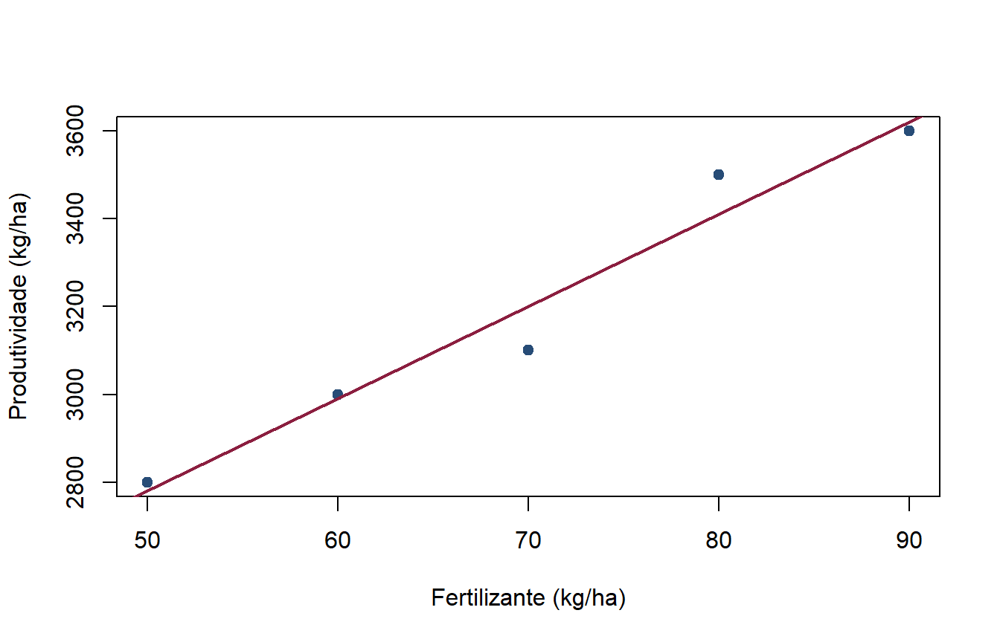

Valor esperado, variância, covariância e esperança condicional
Author
Vitor Hugo Miro
Introdução
A probabilidade e a estatística fornecem a linguagem utilizada para descrever incerteza, formular modelos econométricos e avaliar evidências empíricas.
Este material não pretende apresentar uma revisão completa de Estatística. O objetivo é retomar alguns conceitos utilizados com frequência em Econometria:
variável aleatória e distribuição de probabilidade;
valor esperado;
variância e desvio-padrão;
covariância e correlação;
esperança condicional;
Lei das Expectativas Iteradas.
Ao longo do texto, combinaremos definições matemáticas, exemplos numéricos e pequenas aplicações no R.
1. Variáveis aleatórias e distribuições de probabilidade
Uma variável aleatória associa um valor numérico a cada resultado possível de um evento aleatório.
Como exemplo, considere a produtividade de uma cultura em uma propriedade escolhida aleatoriamente. Antes de observarmos a propriedade, a produtividade é desconhecida e pode ser representada por uma variável aleatória \(X\).
Uma variável aleatória pode ser:
discreta, quando assume um conjunto finito ou enumerável de valores;
contínua, quando pode assumir qualquer valor em determinado intervalo.
1.1 Distribuição de uma variável aleatória discreta
Para uma variável aleatória discreta, a função de probabilidade associa uma probabilidade a cada valor possível:
Suponha que a produtividade \(X\), medida em toneladas por hectare, apresente a seguinte distribuição:
Produtividade \(x\)
2
3
4
\(P(X=x)\)
0,2
0,5
0,3
No R, podemos representar essa distribuição usando dois vetores.
# Valores possíveis da produtividade, em toneladas por hectarex <-c(2, 3, 4)# Probabilidade associada a cada valorprobabilidade <-c(0.2, 0.5, 0.3)# Organizando a distribuição em uma tabeladistribuicao <-data.frame(produtividade = x,probabilidade = probabilidade)distribuicao
# Verificando se as probabilidades somam 1sum(probabilidade)
[1] 1
Também podemos sortear observações dessa distribuição.
# Sorteando a produtividade de 20 propriedadesamostra_x <-sample(x = x,size =20,replace =TRUE,prob = probabilidade)amostra_x
[1] 4 4 3 3 4 3 3 2 3 4 3 4 3 2 3 3 4 3 3 3
Por que isso importa para a Econometria?
Em Econometria, tratamos variáveis como renda, produtividade, escolaridade e preços como realizações de variáveis aleatórias. As propriedades dos estimadores dependem das distribuições dessas variáveis.
2. Valor esperado
O valor esperado representa o centro da distribuição de uma variável aleatória. Ele também pode ser interpretado como a média que observaríamos em um grande número de repetições do mesmo evento.
Para uma variável aleatória discreta \(X\),
\[
\mathbb{E}(X)=\sum_x xP(X=x).
\]
Para uma variável aleatória contínua com função densidade \(f(x)\),
# Receita correspondente a cada nível de produtividadereceita <-5+2* x# Cálculo direto do valor esperado da receitaesperanca_receita_direta <-sum(receita * probabilidade)# Cálculo usando a linearidade do valor esperadoesperanca_receita_linear <-5+2* esperanca_xc(calculo_direto = esperanca_receita_direta,pela_linearidade = esperanca_receita_linear)
calculo_direto pela_linearidade
11.2 11.2
2.4 Valor esperado e média amostral
O valor esperado é uma característica da população ou do modelo probabilístico. A média amostral é calculada a partir dos dados:
\[
\bar{X}=\frac{1}{n}\sum_{i=1}^n X_i.
\]
Quando a amostra cresce, a média amostral tende a se aproximar de \(\mathbb{E}(X)\). Esse resultado será estudado posteriormente como a Lei dos Grandes Números.
# Gerando uma amostra grande da distribuição de Xamostra_grande <-sample(x = x,size =10000,replace =TRUE,prob = probabilidade)c(valor_esperado = esperanca_x,media_amostral =mean(amostra_grande))
valor_esperado media_amostral
3.1000 3.0999
Por que isso importa para a Econometria?
Hipóteses como \(\mathbb{E}(u)=0\) e \(\mathbb{E}(u\mid X)=0\) são formuladas em termos de valor esperado. Além disso, muitos estimadores econométricos são médias ou funções de médias amostrais.
3. Variância e desvio-padrão
O valor esperado informa o centro da distribuição, mas não descreve sua dispersão. A variância mede o afastamento quadrático médio de \(X\) em relação ao seu valor esperado:
# Forma 1: definição da variânciavariancia_x_definicao <-sum( (x - esperanca_x)^2* probabilidade)# Forma 2: diferença entre o segundo momento e a média ao quadradovariancia_x_momentos <- esperanca_x2 - esperanca_x^2c(pela_definicao = variancia_x_definicao,pelos_momentos = variancia_x_momentos)
pela_definicao pelos_momentos
0.49 0.49
A variância é expressa na unidade original elevada ao quadrado. O desvio-padrão retorna à unidade original:
Somar uma constante altera o centro da distribuição, mas não sua dispersão. Multiplicar \(X\) por \(b\) multiplica a variância por \(b^2\).
# Transformação linear da produtividadea <-5b <-2# Variância calculada diretamentevariancia_transformada_direta <-sum( ((a + b * x) - (a + b * esperanca_x))^2* probabilidade)# Variância calculada pela propriedadevariancia_transformada_propriedade <- b^2* variancia_x_definicaoc(calculo_direto = variancia_transformada_direta,pela_propriedade = variancia_transformada_propriedade)
calculo_direto pela_propriedade
1.96 1.96
Por que isso importa para a Econometria?
A variância é central para avaliar a precisão de um estimador. Estimadores com menor variância produzem estimativas mais concentradas em torno do valor verdadeiro. Erros-padrão são construídos a partir de variâncias estimadas.
4. Covariância e correlação
A covariância mede como duas variáveis aleatórias variam conjuntamente:
# Covariância calculada pela função do Rcovariancia_amostral <-cov(fertilizante, produtividade)# Cálculo manual da covariância amostraln <-length(fertilizante)covariancia_manual <-sum( (fertilizante -mean(fertilizante)) * (produtividade -mean(produtividade))) / (n -1)c(funcao_cov = covariancia_amostral,calculo_manual = covariancia_manual)
funcao_cov calculo_manual
5250 5250
# Diagrama de dispersãoplot( fertilizante, produtividade,pch =19,col ="#274C77",xlab ="Fertilizante (kg/ha)",ylab ="Produtividade (kg/ha)")# Reta de regressão apenas para auxiliar a visualizaçãoabline(lm(produtividade ~ fertilizante),col ="#8B1E3F",lwd =2)

4.2 Correlação
A magnitude da covariância depende das unidades de medida. A correlação padroniza a covariância:
# Correlação calculada pela função do Rcorrelacao_amostral <-cor(fertilizante, produtividade)# Cálculo a partir da covariância e dos desvios-padrãocorrelacao_manual <-cov(fertilizante, produtividade) / (sd(fertilizante) *sd(produtividade))c(funcao_cor = correlacao_amostral,calculo_manual = correlacao_manual)
funcao_cor calculo_manual
0.97913 0.97913
4.3 Covariância zero não implica independência
Se duas variáveis são independentes e possuem momentos finitos, sua covariância é zero. A recíproca, entretanto, não é necessariamente verdadeira.
Considere \(X\in\{-1,0,1\}\), com valores igualmente prováveis, e \(Y=X^2\).
# Valores possíveis de X e probabilidadesx_exemplo <-c(-1, 0, 1)p_exemplo <-rep(1/3, 3)# Y depende completamente de Xy_exemplo <- x_exemplo^2# Momentos necessários para a covariânciaex <-sum(x_exemplo * p_exemplo)ey <-sum(y_exemplo * p_exemplo)exy <-sum(x_exemplo * y_exemplo * p_exemplo)cov_xy <- exy - ex * eycov_xy
[1] 0
A covariância é zero, mas \(Y\) é determinada por \(X\). Portanto, ausência de correlação linear não significa ausência de relação entre as variáveis.
Por que isso importa para a Econometria?
A inclinação da regressão linear simples depende da covariância entre \(X\) e \(Y\). Além disso, hipóteses de exogeneidade são frequentemente apresentadas por meio de restrições sobre a relação entre os regressores e o erro.
5. Esperança condicional
A esperança condicional de \(Y\) dado \(X=x\) é a média de \(Y\) na subpopulação em que \(X=x\):
Enquanto \(\mathbb{E}(Y)\) é um único número, \(\mathbb{E}(Y\mid X)\) é uma função de \(X\). Ela associa uma média de \(Y\) a cada valor possível de \(X\).
5.1 Exemplo: irrigação e produtividade
Considere \(I\), uma variável binária que indica o uso de irrigação:
# Probabilidade total de cada grupoprob_grupo <-tapply( dados_conjuntos$prob_conjunta, dados_conjuntos$irrigacao, sum)prob_grupo
0 1
0.6 0.4
Para obter \(\mathbb{E}(Y\mid I=i)\), ponderamos os valores de \(Y\) pelas probabilidades condicionais dentro de cada grupo.
# Numerador: soma de y vezes a probabilidade conjunta em cada gruponumerador_condicional <-tapply( dados_conjuntos$produtividade * dados_conjuntos$prob_conjunta, dados_conjuntos$irrigacao, sum)# Média condicional em cada grupomedia_condicional <- numerador_condicional / prob_grupomedia_condicional
Isso não significa, por si só, que a irrigação cause um aumento de duas toneladas na produtividade. A diferença também pode refletir solo, clima, tecnologia, seleção das propriedades ou outras características.
5.2 Esperança condicional em uma amostra
Em dados amostrais, uma forma simples de estimar esperanças condicionais para uma variável categórica é calcular a média de cada grupo.
# Exemplo de uma pequena amostra de propriedadesamostra_fazendas <-data.frame(irrigacao =c(0, 0, 0, 0, 1, 1, 1, 1),produtividade =c(2.7, 3.1, 3.0, 3.4, 4.5, 5.2, 4.8, 5.5))# Média geral da produtividademean(amostra_fazendas$produtividade)
[1] 4.025
# Médias condicionais ao uso de irrigaçãotapply( amostra_fazendas$produtividade, amostra_fazendas$irrigacao, mean)
No exemplo amostral, podemos comparar duas previsões:
usar a média geral para todas as propriedades;
usar a média específica de cada grupo de irrigação.
# Previsão 1: a mesma média geral para todas as propriedadesprevisao_geral <-rep(mean(amostra_fazendas$produtividade),nrow(amostra_fazendas))# Previsão 2: a média correspondente ao grupo da propriedademedias_grupos <-tapply( amostra_fazendas$produtividade, amostra_fazendas$irrigacao, mean)previsao_condicional <- medias_grupos[as.character(amostra_fazendas$irrigacao)]# Erro quadrático médio de cada previsãoeqm_geral <-mean( (amostra_fazendas$produtividade - previsao_geral)^2)eqm_condicional <-mean( (amostra_fazendas$produtividade - previsao_condicional)^2)c(media_geral = eqm_geral,media_condicional = eqm_condicional)
media_geral media_condicional
1.054375 0.103750
Neste exemplo, conhecer o grupo de irrigação permite construir uma previsão com menor erro quadrático médio.
Por que isso importa para a Econometria?
A função de esperança condicional \(\mathbb{E}(Y\mid X)\) descreve como a média de \(Y\) varia com \(X\). A regressão busca caracterizar ou aproximar essa relação. Uma diferença condicional, contudo, não deve ser interpretada automaticamente como efeito causal.
# Forma 1: valor esperado calculado diretamente da distribuição conjuntaesperanca_y_direta <-sum( dados_conjuntos$produtividade * dados_conjuntos$prob_conjunta)# Forma 2: média ponderada das esperanças condicionaisesperanca_y_iterada <-sum(media_condicional * prob_grupo)c(calculo_direto = esperanca_y_direta,expectativas_iteradas = esperanca_y_iterada)
calculo_direto expectativas_iteradas
3.8 3.8
A igualdade mostra que a média geral pode ser decomposta a partir das médias dos diferentes grupos da população.
Portanto, a hipótese de média condicional zero implica média incondicional zero e ausência de correlação entre \(X\) e \(u\), quando os momentos existem. A recíproca não é garantida: \(\mathbb{E}(Xu)=0\) é uma restrição mais fraca do que \(\mathbb{E}(u\mid X)=0\).
Por que isso importa para a Econometria?
A Lei das Expectativas Iteradas permite deduzir condições de momento a partir de hipóteses condicionais. Essa passagem será utilizada para estudar MQO, exogeneidade e propriedades dos estimadores.
7. Decomposição da variância
Uma extensão útil das ideias anteriores é a Lei da Variância Total:
Essa decomposição ajuda a entender por que o conhecimento de \(X\) pode melhorar a previsão de \(Y\): quanto maior a variação entre as médias condicionais, maior é a parcela da variação de \(Y\) que pode ser associada às diferenças entre os grupos definidos por \(X\).
Na população simulada, os valores verdadeiros são \(\beta_0=5\) e \(\beta_1=0{,}8\). Podemos estimá-los por MQO.
# Estimando uma regressão linear simplesmodelo_simulado <-lm(y_sim ~ x_sim)coef(modelo_simulado)
(Intercept) x_sim
5.2944915 0.7766686
# Exibindo somente parte das observações para facilitar a visualizaçãoindices <-sample(seq_len(n_sim), size =300)plot( x_sim[indices], y_sim[indices],pch =19,col =rgb(39/255, 76/255, 119/255, 0.45),xlab ="X",ylab ="Y")# Função de esperança condicional verdadeiraabline(a =5, b =0.8, col ="#8B1E3F", lwd =2)
Os conceitos revisados neste material formam a base probabilística da Econometria. O valor esperado descreve o centro de uma distribuição; a variância caracteriza sua dispersão; a covariância mede associação linear; e a esperança condicional descreve como a média de uma variável se modifica com a informação disponível.
A Lei das Expectativas Iteradas conecta médias condicionais e incondicionais e permite transformar hipóteses condicionais em condições de momento. Esses resultados serão retomados no estudo da função de esperança condicional, do melhor preditor linear e do método de mínimos quadrados ordinários.